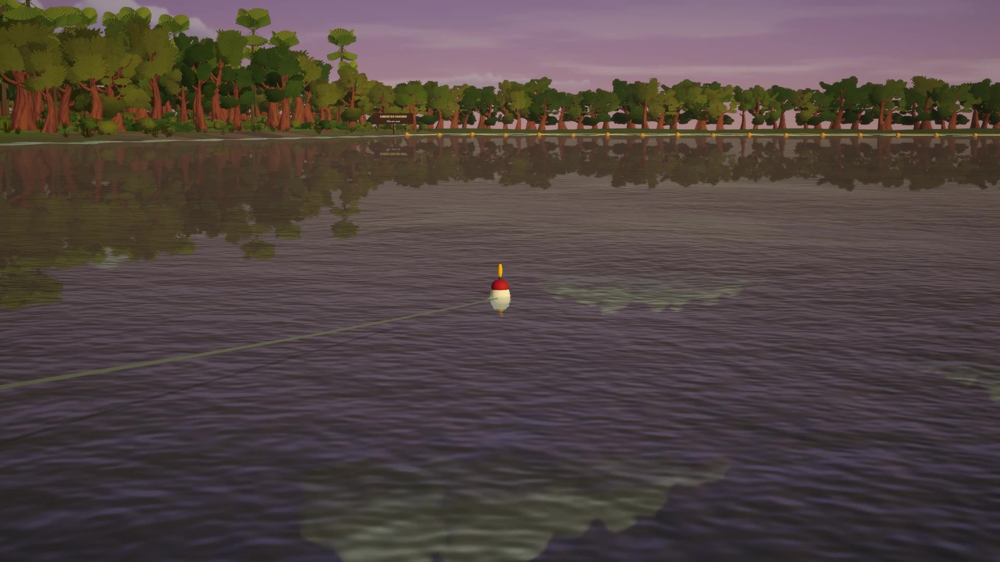
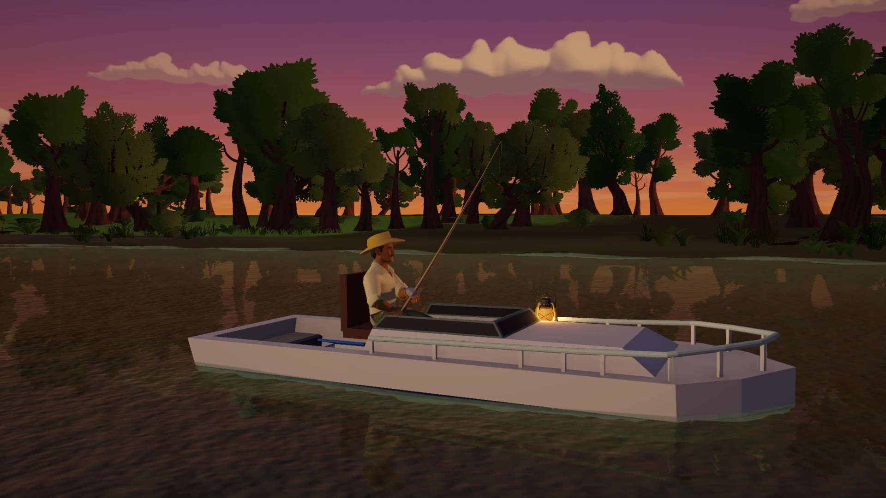
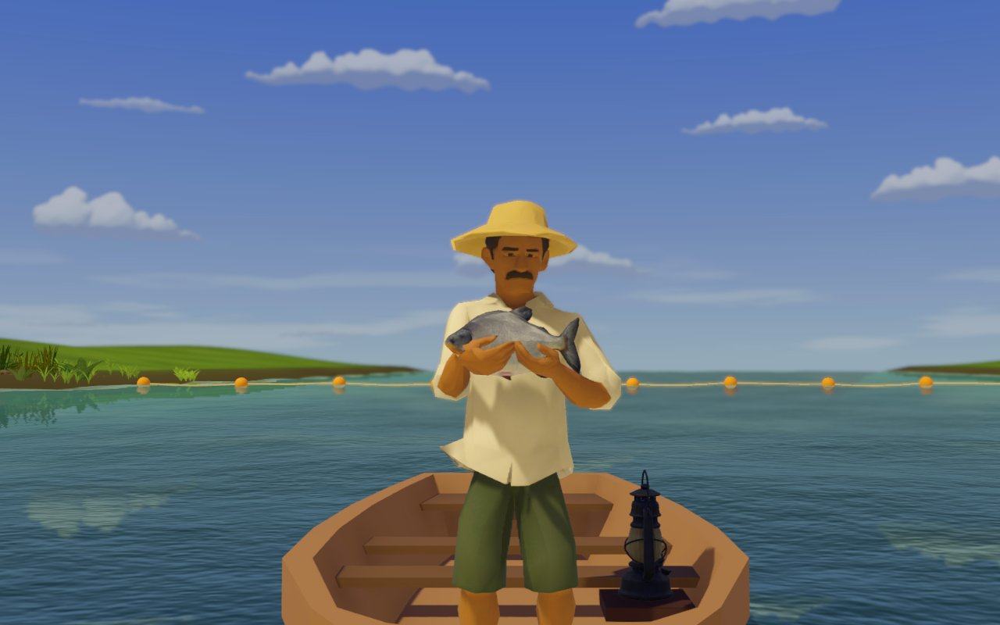
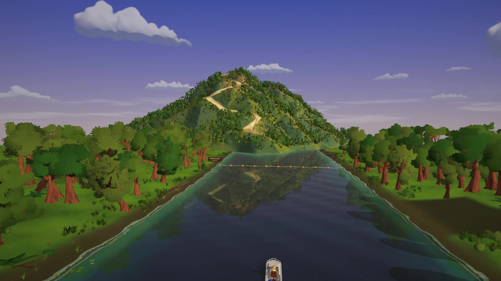
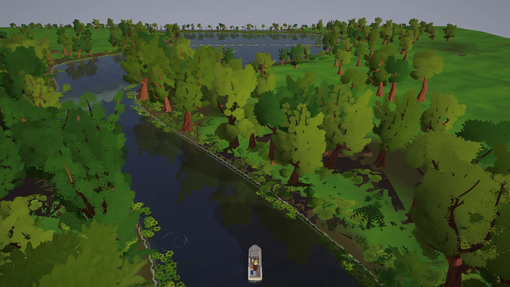
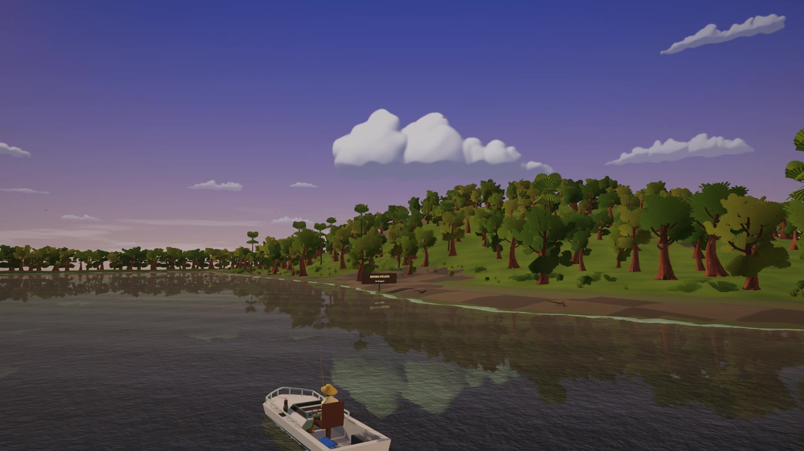
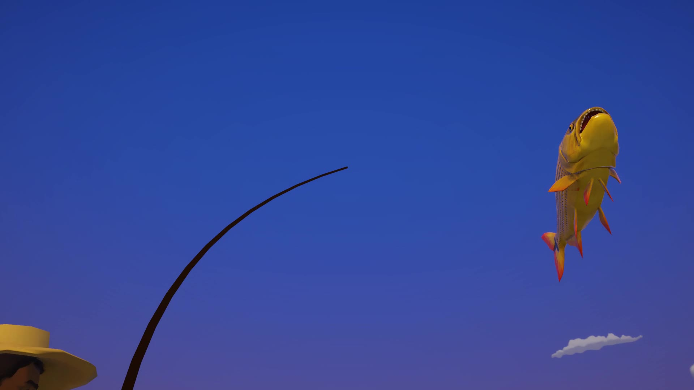
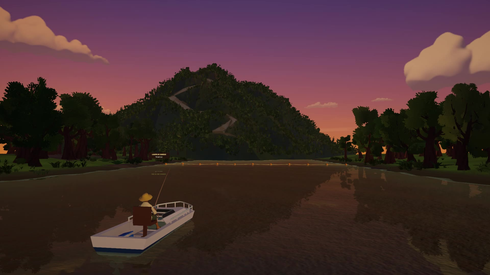

Hora, isca e profundidade
Decidem o que morde. O pacu come de manhã; a cachara sai ao anoitecer. O caderno mostra onde e como procurar cada espécie.

Jogo de pesca nos rios de Mato Grosso.
Você começa no Rio Cuiabá com vara básica e minhoca a 1 m. Vende o que pesca na vila, troca o barco de madeira pelo bote com motor e depois pela lancha, e segue para o Rio Mutum, em Barão de Melgaço, e para o Rio Paraguai, em Cáceres.
Registre as oito espécies nos três rios no caderno do barqueiro. O último título do jogo é Guardião do Pantanal.


Decidem o que morde. O pacu come de manhã; a cachara sai ao anoitecer. O caderno mostra onde e como procurar cada espécie.

O dourado arranca e salta, a piraputanga pede puxadas alternadas, a piranha segue um ritmo e o pintado precisa ser guiado pelo corredor.

Barco de madeira, bote com motor e lancha. O barco novo libera a viagem para outro rio.

Cinco poses para a foto da captura. Soltar o peixe também conta no caderno.
Cada destino é uma versão estilizada do lugar real.

Morro de Santo Antônio.
Lambari, pacu-peva e piranha.

Baía de Siá Mariana.
Pacu-peva, pacu e piraputanga.

Morro Pelado.
Cachara, dourado e pintado.





Imagens gravadas no jogo.
Versão jogável em desenvolvimento, para demonstração. Não pede conta nem internet para jogar.
Versão 1.0.56 · ZIP · 248 MB · extraia antes de jogar
Não abra o jogo direto de dentro do ZIP. O executável não tem assinatura digital: se o Windows mostrar um aviso, confira se baixou desta página e o SHA-256 acima antes de executar.